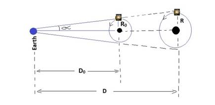

Derivation of Hubble's Law and its Relation to Dark Energy
and Dark Matter
João
Carlos Holland de Barcellos, Jan 2019
Abstract: From the "Decreasing Universe"
model [01, 02], establishing
the contraction of space tissue when exposed to a gravitational field, we
derive the Hubble Law and, from there, we will explain the effects "Dark Energy" and "Dark Matter".
PassWords: Hubble’s Law, Dark Energy, Dark Matter, Decreasing
Universe, Universe Expansion.
Introduction
We know from observation that galaxies seem to move
away in an accelerated way. This observation was synthesized in the famous
"Hubble Law" [04].
To explain this accelerated scape an entity was
proposed that became known as "Dark
Energy"[09].
Subsequently, it was also observed that stars orbit
galaxies at a much higher velocity than calculated. As if there was much more
matter inside the galaxies than the one observed.
To explain this phenomenon was proposed another entity
that became known as "Dark Matter"
[06].
However, despite many efforts, no other evidence of
both "Dark Energy" and
"Dark Matter" has been
found.
So
we are proposing a new explanation that replaces these two "dark"
entities with another hypothesis: The "Decreasing
Universe" Hypothesis [01].
By reducing the number of hypotheses - from two to one
- we will be in agreement with the "Ocam Razor", beyond which, as we
shall see, we can also derive the "Hubble
Law".
In the "Decreasing
Universe" model [01] it is
established that the gravitational field causes a space contraction that can be
detected by an observer who is not subjected to such field. In this way, all
objects within this space are also contracted, specially
instruments of these observers.
Particularly our planet is subjected, in a greater or
lesser degree, to various fields: The gravitational field of the Earth itself,
the Sun, the Moon, the distant galaxies, and on.
If, for example, we have a measuring instrument as a scaler
with the length "L" (= 1 meter), then, from the point of view of an
observer who does not suffer gravitational
influence, it will notice that this scaler, with the time, will decrease in
size.
Of course, for observers subject to these there will
be no change, since all space and everything that is immersed in it is
contracting at the same time so that it will have no change in the measurements
made by them.
For example, here on Earth, a table with 2m length,
after millions of years, will continue to measure 2m, as the table shrinks in
the same proportion as the measuring scaler and, locally, no difference can be
observed.
Outer Space
However, in the intergalactic space the gravitational
field is practically null, and, therefore, this space does not suffer the same
contraction that we here on Earth are undergoing.
Thus, in the absence of a considerable gravitational
field in intergalactic space, the space between us and a distant galaxy will
not contract in the same proportion as our own terrestrial space is
contracting.
Consider, for example, the enormous time a photon,
emitted by a distant galaxy, takes to reach us. In this long period of time,
which may be billions of years from the emission of the photon until it reaches
our planet, our space - and our scalers - will be reduced in size compared to
the original size they had when this photon was emitted under the view of an
observer who is not subject to such a gravitational field.
This reduction of our local space and the size of our
'scalers' will cause us to distance ourselves to the star larger than it was at
the time the photon was emitted (even if its actual distance did not change in
that period).
Defining Some Concepts
Let's call of "Local Space" (= “LS”)
the region of space that is subject to a non-negligible gravitational field and
thus suffers spatial contraction.
Let's call of "Local Observer" (= “LO”) the observer who belongs to a “LS”
and therefore subject - him and his instruments - the spatial contraction. For
example, the planet Earth is an “LS” and we are “LO”.
Let's call of "Outer Space" (= “OS”)
the region of space that is subject to a very weak and despicable gravitational
field.
Let's call of "Sidereal Observer" (= “SO”)
those observers locateds in this spatial region. For example, observers in the
intergalactic region would be an “OS”.
To clarify ideas, we may think that observers in the “OS”
(= “SO”) play a role similar to an observer in an inertial frame [05] as
opposed to observers located in the “LS”
that would play an analogous role to
observers in a non-inertial referential.
Exemplifying the Concepts
Consider, for example, at an arbitrary initial instant
any "t0" in the
“LS”, a scaler of length "L0" that an “LO” uses to make
its measurements.
Suppose that at this moment "t0" an “SO”, in intergalactic space, take
this measure of this same “L0” scaler as the standard measure for
your own measurements.
Then, at time "t0", both
observers (“LO” and “SO”) will consider the pattern "L0" of the same size.
However, the “LS” will continue to contract in
relation to the “OS”. The “LO” will not notice the variation of the scaler "L0"
because both its measuring scaler and everything in his “LS” decrease in the
same proportion. However, the “SO”, after a time "t"
("t"> “t0") will see the scaler of the "LO” decrease
to a smaller size "L".
Let us call "TJ"
(Jocaxian Time) the time period
(Δt = t-t0) necessary for an “SO” see the space (and the scaler)
of the OL contracting at half size
it had at time t0. That is, to shrink itself to a size L = L0/2
at time t0 + Tj.
Before we go on let's make some simplifications.
Some Simplifications
Before we continue, we will consider that:
- If the gravitational field is constant, the time
required for the “LS” (and all that is contained in it), to contract to half
its size, called TJ, measured by an “SO”, will also be constant.
We will also consider that the galaxies, from the
point of view of an “SO” are not
necessarily rapidly moving away from each other. For simplicity we will
calculate the effects of "Dark Energy" and "Dark Matter"
only as a result of our gravitational contraction, keeping constant its distances
(from the point of view of an “SO”).
Also
we will not consider the effect of time dilation [03] due to
the gravitational force in the “LS” in relation to the “OS”.
Local Space Contraction Formula (“LS”)
We can mathematically translate the concepts we saw
above into the following formula:
L(t) = L0/2∆t/Tj ( E1 )
(Formula
of space contraction from the point of view of an “SO”)
Where:
L (t) = Measure of L0 in the “LS” by a
"Sidereal Observer".
t0 = Initial time (arbitrary)
L0 = Length measured in t=t0
Tj = Jocaxian Time
∆t = t – t0
Note that for an “LO”, L = L0 (always!), that
is, the size of the scaler does not change with time in the “LS”.
At each "TJ" period of time, our space (and
our scales) are contracted in half (from
the point of view of an "SO").
If we define :
Fj(∆t) = 2∆t/Tj ( E1-B )
(Jocaxian
Factor).
We can rewrite (E1):
L = L0/Fj(∆t) ( E2 )
We can also rewrite the same Jocaxian Factor (Fj)
in a more friendly way:
Fj(∆t) = exp( In(2)*∆t/Tj ) ( E3 )
“Dark Energy” Effect
Of course, if intergalactic space does not contract,
and if our 'scale of measurement' decrease in size, then this intergalactic space
should seem to us larger, in the same proportion as our ‘scale
of measurement’
contract itself.
If, for example, at t = t0, we measure the
distance to a galaxy "X" with our swcale of length L0, as
being D0, after a time "Tj"
our rule will be measuring half of its
initial size L0, and therefore, when we (“LO”) measure the distance
to that galaxy, we will measure it as being D = 2 * D0
We should note that a measure within our “LS” sizes do
not change, as everything decreases along with our scaler and rulers, but the “OS”
does not contract like our “LS”. So we will have this
illusion that the galaxy "X" is moving away from us. This is what we
can call the "Dark Energy
Effect".
Apparent Distance Formula
The measured distance is inversely proportional to the
length of the measurement pattern. We can synthesize this idea mathematically
with the following formula (See the Appendix
A):
D(∆t) = D0 * Fj(∆t) ( E4 )
(Distance
Formula with the Jocaxian Factor).
Where:
“t0“is the time at which the photon was emitted by the galaxy.
"t" is the time at which Earth received this photon.
"D0" is the distance we would measure, from Earth to galaxy
at time "t0"
"D(∆t)" is the distance we measured from Earth to a
galaxy after “∆t”time.
"Δt" = t-t0 Time period
As Fj(Δt) grows exponentially with
time (E3) the Earth's distance from the galaxy will also appear to increase
exponentially with time.
Hubble’s Law
With the formula of the apparent distance (E4) we can
calculate the apparent distance speed:
V = d[ D(∆t) ] /dt = ( E5-A
)
V = d[D0*exp( ln(2)*∆t/Tj ) ] /dt
( E5-B )
V = ( ln(2) / Tj ) * D(∆t) ( E6 )
(Distant
galaxies’ apparent distance speed formula.)
But Hubble's law is exactly like this:
V = H0 * D ( E7 )
(Hubble’s
Law)
Where (H0 = Hubble’s Constant and D is the distance from the galaxy)
As E6 = E7, now we can determine Tj:
Tj = ln(2)/H0
( E8 )
Substituting (E8) into (E3) we will have:
Fj(∆t) = exp( H0*∆t) ( E9 )
(Jocaxian
Factor in terms of the Hubble constant)
What provides us:
D(∆t) = D0* exp( H0*∆t) ( E10 )
(Apparent
distance formula in terms of the Hubble constant)
If we want to calculate the real distance from Earth
to the galaxy, using the measurements that our scales had at the time the
photon was emitted (at t = t0) then:
∆t = D0/c ( E11 )
(Time
for a photon emitted from the galaxy to reach us, where c = speed of light)
From (E11) and (E10) we will have:
D = D0 exp( D0 *H0/c ) ( E12 )
(Apparent
distance of a galaxy depending on the actual distance)
Some Values
As H0 = 2.2e-18 s-1, we can replace it in (E8)
and find Tj
Tj = 3.15E17 s = 10
billion years
That is, the Jocaxian Time, the time necessary for
our space to contract in half, is 10 billion years.
We can now find the
contraction rate of our space for every billion years:
(Tx)10 = 2 => Tx
= exp( ln(2)/10 ) = 7%
That means:
For
every 1 billion years our space (and our scalers) are
contracted 7% of their original size.
It is interesting to note that
this value (7%) corresponds exactly to the contraction rate calculated from the
"Redshift" of the Galaxy NGC3034
[02].
Currently the apparent
distance of the 'NGC3034' is about 11E6 light years, (or 1E23 meters).
Applying (E12) to the galaxy
NGC3034 and knowing that H0/c
= 8E-27 m-1 we will have the following equation for the distance
to the galaxy NGC3034:
1E23 = D0 * exp( D0 * 8E-27)
( E13 )
(Equation
of the real distance of the Galaxy NGC3034)
Using a solver [08] we will obtain for the real
distance:
D0
= 9E22 that is, this galaxy is about 10% closer to Earth than it appears to be.
Dark Matter
Dark Matter [06] can also be observed being
an effect of our spatial contraction.
As nomenclature, we will
suppress the subscripts "obs" of the measurements observed here from
Earth. So we'll simplify:
Vobs = V ; ( Rotation Speed Observed)
Dobs = D ; ( Distance
Observed)
Robs = R ; ( Radius
Observed)
Wobs= W ; ( Angular
Speed Observed)
Mobs = M ; ( Mass
Observed)
Considering the illustration:
Star Orbiting a distant Galaxy

Fig.1
- From Earth we observe a star rotating a distant galaxy.
Suppose that from Earth we now
observe a star circling the periphery of a galaxy that is at an observed (apparent)
distance "D" from our planet. According to Fig. 1 above, the observed
“R” radius of the galaxy will be proportional to this distance:
R = sen(α) * D ( E14 )
(Orbit radius as a function of observed
distance and angle)
As we saw earlier, at the time
the photon was emitted, the real distance would be D0, so:
R0 = sen(α) * D0
( E16 )
(Real orbit radius as a function of actual
distance and angle)
From (E9) and (E11) We can
define the Jocaxian Factor of the Galaxy:
FJ = exp( D0 *H0/c ) ( E17 )
(Jocaxian Factor of the Galaxy)
So, we will have:
R0 = R / FJ
(E18)
(Real Radius as a function of the Jocaxian
factor of the Galaxy)
If M is the observed mass of
the galaxy where the star orbits, and V is its tangential velocity observed from the
Earth, and G is the Gravitational constant of the Galaxy, we will have [07]:
V2 = M*G/R (E19)
(Equation of Velocity as a function of mass and
radius)
In terms of the angular
velocity, we have:
V2 = W2
*R2 (E20)
(Equation of Velocity as a function of angular
velocity and radius)
From (E19) and (E20) we
derive:
W2 = MG/R3
(E21)
(Equation of the angular velocity as a function
of Mass and Radius)
From (E21), at t = t0, we
have:
W02 = M0G/R03
(E22)
(Equation of the angular movement in function
of the Real Radius and Real Mass)
The angular velocity does not
change with the observed distance, since the time interval between two emitted
photons is the same interval when they arrive to Earth. So:
W = W0 (E23)
(The angular speed is the same for an “LO” as
for a “SO”)
From
(E20), E (22), E (23) we find:
V2
= (M0G/R03) * R2 (E24)
Using (E18):
V2 = (M0Fj3)
* G/R (E25)
(Equation of the tangential velocity as a
function of the Barium Mass and Apparent Radius)
Comparing (E25) with (E19) we
conclude that:
M = M0 *FJ3
(E26)
(Apparent mass as a function of actual mass)
From Earth we observe a mass M
for the galaxy larger than the mass at t = t0.
Then the effect "Dark
matter" will be the difference of M with the real mass M0:
Dark Matter = M–M0=M0*( exp(3*D0 *H0/c )
– 1 ) (E27)
(Dark matter equation as a function of the
Hubble constant and the actual distance)
Conclusions
If we adopt the "Decreasing
Universe" where the gravitational field shrinks the space in which it crosses,
we find that the accelerated separation of galaxies, often explained by the
so-called "Dark Energy" is a kind of "illusion" resulting
from this space contraction and, therefore, unnecessary.
The "Dark Matter",
on the other hand, can also be explained by the same effect of the
gravitational contraction of our space, since the radius of the galaxies is
observed as greater than it really is, consequently, the speed of translation
of a star is seen as above-expected with the observed baryonic mass, providing
the false impression that there is an extra, invisible matter responsible for
the effect.
Appendix A
Derivation of the Distance Formula from the
Local Contraction Formula.
At t=t0
we will take as the measurement standard for both observers the measure "L0",
for example, L0 = 1 meter.
Thus, all distances will be taken as a number that multiplies the L0
pattern;
Then both
observers, sidereal and terrestrial, measure the same distance to a given
galaxy:
Distance = D0 * L0 ( A1 )
( D0 is the distance that is
measured to the galaxy by taking the measurement pattern L0)
After a
time t (> t0), from the point of view of a sidereal observer, the
terrestrial space shrank, and the rule tablet L0 decreased to L
according to E1:
L =
L0/Fj(∆t)
(Spatial
contraction formula (E2) )
As in our
hypothesis, from the point of view of the Sidereal Observer, the galaxy does
not move away, the distance covered must be the same, that is:
Distance = D * L (
A2 )
(D is the measured Distance to the galaxy
according to the L pattern, by the
Terrestrial observer)
We must
keep in mind that for the local terrestrial observer, L=L0, since he does not perceive his own contraction).
From (A1)
and (A2 )we have to:
D0*L0
= D*L ( A3 )
(From the point of view of the sidereal
observer, the distance is not altered)
Using (E1),
we have finally:
D = D0*
Fj(∆t)
( E4 )
(Measured distance to the galaxy according to
the terrestrial observer, as a function of time)
References
[01] The Gravitational Field and the Dark
Energy
https://ijrdo.org/index.php/as/article/view/1311
[02] The Equivalence Principle and the End of
the Dark Energy
http://www.ijera.com/papers/Vol7_issue1/Part-1/C0701011314.pdf
[03] Gravitational time dilation
https://en.wikipedia.org/wiki/Gravitational_time_dilation
[04] Hubble's law
https://en.wikipedia.org/wiki/Hubble%27s_law
[05] Inertial frame of reference
https://en.wikipedia.org/wiki/Inertial_frame_of_reference
[06] Dark Matter
https://pt.wikipedia.org/wiki/Dark_Matter
[07] Orbital Speed
https://en.wikipedia.org/wiki/Orbital_speed
[08] Solver for Equations
https://www.mathway.com/Algebra
[09] Dark Energy
https://en.wikipedia.org/wiki/Dark_energy